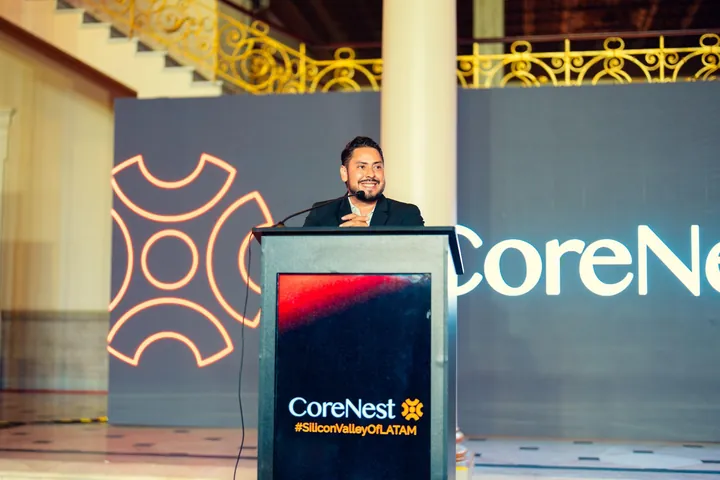
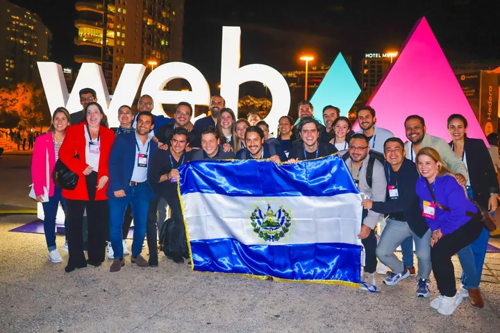
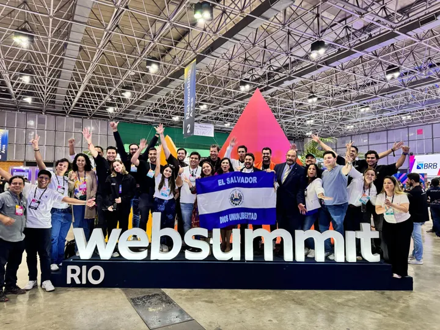
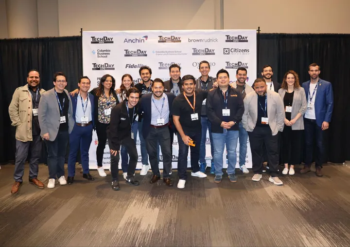
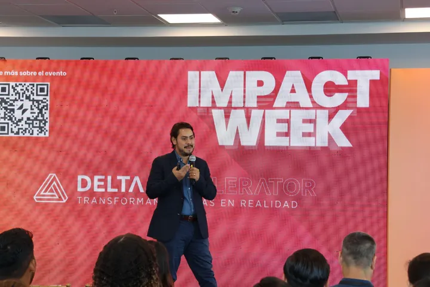
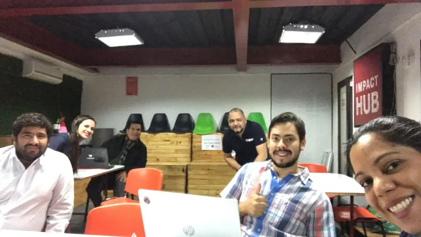
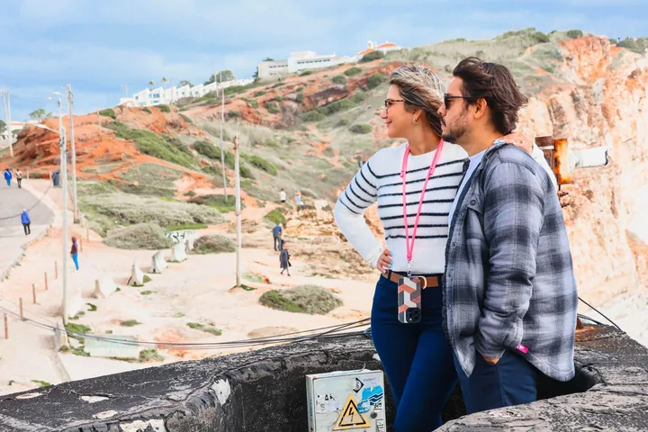

From El Salvador, for Central America and Latin America
José Roberto Rodríguez Duque
PMPStartup ecosystem builder and CEO of CoreNest Accelerator El Salvador
For the past decade, I've worked at the intersection of startups, companies, investors and government, helping turn real business challenges into opportunities for validation, growth and scale across Latin America.

- 20 yearsbuilding businesses, since his first one at 16
- 3,500+small businesses supported through Impact Hub San Salvador
- 37 peoplein the El Salvador delegation he took to Web Summit Lisbon
- 700+startups from 22 countries applied to CoreNest Accelerator
- IVLP 2022alumnus of the U.S. International Visitor Leadership Program
I studied abroad and I could have stayed. I came back because I believe in what this country can do.
Why El Salvador?
As an engineering exchange student in Córdoba, Argentina, I was the only Salvadoran in the program. Every time my country came up, the conversation was reduced to violence and poverty. I realized how limited the story people knew about El Salvador was, and I decided I wanted to help change that narrative.
Later, in Barcelona, I saw what a real startup ecosystem looks like: incubators, seed capital and people who open doors. When I came home in 2015, the startup ecosystem was still early and fragmented. There was talent and entrepreneurial energy, but the pathways, capital and connections founders needed were still developing.
I believe startups are the engine that can grow our economy fastest. I want El Salvador to be the first step for founders: the place where you validate, build your first version and prove it works, before you scale across Latin America.
How did El Salvador's startup ecosystem start?
There is no single founding date. It grew in steps, built by founders, companies, investors, institutions and government. This is the short version, as I have lived it.
- Before 2017
Support for entrepreneurs existed, but mostly for traditional small businesses. Startups built to scale were few, and so were the programs, investors and connections around them.
- 2017
The global Impact Hub network arrives in San Salvador, and Hugo, a delivery app, is founded. Hugo later grows to six countries in the region.
- 2023
Delivery Hero completes its acquisition of Hugo, showing that a startup from El Salvador can create real value. The Legislative Assembly approves 15 years of tax incentives for technology innovation, and a new type of company, the S.A.S., that one person can open with one dollar of capital.
- 2024
Salvadoran startups travel as a group: a mission to New York and a 37-person delegation of startups, government and companies at Web Summit Lisbon.
- 2025
A delegation goes to Web Summit Rio, and CoreNest signs an alliance with the Ministry of Economy to support startups in El Salvador.
- Today
More than 700 startups from 22 countries have applied to CoreNest Accelerator, a sign that founders across Latin America now look at El Salvador.
What does a startup ecosystem builder do?
An innovation and startup ecosystem builder connects the pieces a startup cannot get on its own: customers, capital, partners, public institutions and global networks. Since 2017, my work in El Salvador has focused on four of those connections.
- CommunityCo-founding Impact Hub San Salvador, launching R2P (Ready to Pitch) and forming Delta Members, which became Alpha Ventures.
- Corporate demandBringing companies into the ecosystem as partners and customers of startups, today through CoreNest Accelerator.
- Global exposureTaking Salvadoran startups to New York, Web Summit Lisbon and Web Summit Rio.
- Public and private alignmentWorking with the Ministry of Economy and Invest in El Salvador so the country becomes the first step for founders.
Sources: Revista E&N on Hugo (2023), LexLatin on the innovation law (2023), García & Bodán on the S.A.S. (2023), Diario El Mundo on CoreNest (2025).
What am I building now?
I lead CoreNest Accelerator El Salvador, an accelerator that connects startups with companies that need them. Everything starts with a real pilot.
Training alone does not make a startup grow. It needs clients, connections and a clear path to an exit, so we start from the other end. Large companies in the region bring real business challenges. We match each challenge with a startup that can solve it, and we run a pilot with clear goals.
A successful pilot can create proof of value, deepen a corporate relationship and strengthen the startup's case for growth. From there, CoreNest can help explore the market and capital pathways that make sense for that company.
- A company brings a challengeA real problem in its business, owned by a leader who wants it solved.
- A startup runs a pilotMeasurable, time-boxed and close to the company's core business.
- The pilot opens the next stepProof of value with a corporate partner strengthens the case for growth, partnership or investment.
Corporate and media partners include Davivienda, Asesuisa, Publimovil and Telecorporación Salvadoreña (TCS). The accelerator signed an alliance with El Salvador's Ministry of Economy in 2025.

Who should reach out, and for what?
I work mostly in El Salvador and Central America, and across Latin America when the opportunity calls for it.
-
Startup founders
You are building a technology company with the ambition to scale across markets. You want to validate with real corporate customers, learn fast and build a company that becomes strategically valuable over time.
Apply or write to me -
Corporate leaders
You want outside innovation to solve real problems in your company. Bring a challenge and use the accelerator as your innovation lab, with pilots that have clear goals.
Bring a challenge -
Co-investors
You invest in Latin America and want visibility into startups validating against real corporate needs. Through CoreNest Accelerator, qualified investors can learn about opportunities emerging from that process, subject to fit, diligence and the applicable investment structure.
Learn more -
Government and institutions
You want to grow the economy through innovation and position El Salvador as the place to start. I have worked with the Ministry of Economy and Invest in El Salvador on missions abroad.
Start a conversation -
Event organizers and media
You need a speaker or panelist on startups, corporate innovation, venture capital in Latin America or El Salvador's ecosystem, in Spanish or English.
Invite me to speak
How did I get here?
Twenty years, many pivots and one constant: build what is missing, here.
-
My first business: an ice cream cart
When my mother was going through cancer treatment, the one thing that comforted her was sorbete de carretón, the traditional Salvadoran cart ice cream. I learned to make it myself and turned it into a small business, Sorbetería Sin Igual. I later sold it and used the money to study abroad.
-
Engineering and corporate years
I studied Industrial Engineering at Universidad Centroamericana José Simeón Cañas (UCA), with an exchange at Universidad Católica de Córdoba in Argentina. I worked in regional sales, logistics and cost structures at Logictires International, Joven360 and Avery Dennison, where I priced programs for 30 global apparel brands.
-
Barcelona and my first startup
I earned a master's degree in Project Management at EAE Business School and Universitat Politècnica de Catalunya. With four partners from England, Spain and Argentina I co-founded City Experience, a tourism app for lesser-known cities. Barcelona Activa incubated us and we won 30,000 euros in seed capital.
-
Bringing City Experience home
I convinced my partners to launch in El Salvador. We signed hundreds of local businesses, placed fourth at Innovatics 2015 and franchised the model to Guatemala, Costa Rica, Panama and the Dominican Republic. There was no salary: I only earned what I sold, and I turned down a steady corporate job to keep building. Then the market told us the truth: businesses wanted photos and social media, not another app.
-
Listening to the market
We pivoted City Experience into Sayhello, a digital agency, and grew it for eight years. We sold it in 2025, and today it is MAYNDS.
-
Impact Hub San Salvador
I joined as operations manager when the global Impact Hub network opened in El Salvador, backed by the Inter-American Development Bank, and later became a partner and co-founder. The first years were less glamorous than the title: I ran an 800 square meter building, from the air conditioning to the internet, while we figured out the business model. Over time our programs supported more than 3,500 micro, small and medium businesses. There I launched R2P (Ready to Pitch), one of the first stages in El Salvador where startups pitched to investors and companies, and took part in Acelera Empresaria, a business acceleration program for Salvadoran women.
-
Taking our startups to the world
I interviewed 40 of the country's most promising startups and chose the strongest. Together we formed Delta Members, the first club of Salvadoran founders, which became Alpha Ventures: a community for startups that had already raised more than $100,000, including N1CO, Boxful, Ábaco and Fruto Infinito. In May 2024 I led 11 of them to New York. In November 2024, with support from the Ministry of Economy and Invest in El Salvador, I took a 37-person delegation of startups, government and companies to Web Summit in Lisbon. In 2025 we went to Web Summit Rio with the Minister of Economy.
Those years required real trade-offs, but they reinforced a conviction: building an ecosystem takes patience, consistency and long-term commitment.
-
CoreNest Accelerator El Salvador
After ten years of building with more conviction than income, the right vehicle arrived. In 2025 Invest in El Salvador asked me to present the local ecosystem to CoreNest Capital. In July 2025 I became CEO of CoreNest Accelerator El Salvador. More than 700 startups from 22 countries have applied, and we are building the program around corporate challenges and pilots.
Moments that built the ecosystem
Missions, stages and communities from the last ten years.








What do I believe?
Six ideas that guide how I work and how I live.

Capital accelerates. It does not create.
We ran our first missions without money. If the vision is clear, you can move forward. Creation has to come from founders.
Plan the exit from day one.
Build with strategic value in mind. Products change and markets evolve; the strongest companies solve meaningful problems and create options for growth, partnership, investment or acquisition over time.
Fall in love with the problem, not the product.
The only things you should fall in love with are your children. A business is built to be bought one day. Love the problem you solve and stay open to feedback, even when it hurts.
El Salvador is your first step.
Validate and build here, with the right corporate partner, then scale across Latin America fast. A startup that wins the region is the first call for a global buyer.
More women building startups.
Having two daughters changed how I see the world. The startup world is still mostly men, and I want to help change that from my role.
Family and faith first.
I am a husband and a father, and I believe in God. Hard times are tests that make you stronger. Talent adds talent, capital brings capital, and success brings success.
Interviews and press
Where I tell the story in my own words.
 Watch on YouTube
Watch on YouTubeEl Salvador, the next Silicon Valley of Latin America
Fundamentos Media, May 2026. Ten years from Impact Hub to CoreNest.
 Watch on YouTube
Watch on YouTubeCerebroders podcast
October 2026. Leadership, startups and how exits really work.
- CoreNest launches its program for startups in El SalvadorDiario El Mundo, September 2025
- El Salvador boosts its economy with startups at Web Summit LisbonDinero, November 2024
- Salvadoran startups seek investment in New YorkEl Salvador in English, May 2024
- City Experience: the city in your handsDiario El Mundo, March 2016
- City Experience, an app that shows the best of the countryelsalvador.com, December 2015
Frequently asked questions
Who is José Roberto Rodríguez Duque?
José Roberto Rodríguez Duque is a Salvadoran startup ecosystem builder and the CEO of CoreNest Accelerator El Salvador. He co-founded Impact Hub San Salvador and, for the past decade, has worked at the intersection of startups, companies, investors and government, helping founders from El Salvador validate their ideas and grow across Latin America.
How is his name written?
His full name is José Roberto Rodríguez Duque. Media also call him José Roberto Rodríguez, José Rodríguez or Roberto Duque. On Instagram he is @joserobduque.
What is a startup ecosystem builder?
A startup ecosystem builder connects founders with the customers, capital, partners and public institutions they need to grow. José Roberto Rodríguez Duque has done this work in El Salvador since 2017, first at Impact Hub San Salvador and now as CEO of CoreNest Accelerator El Salvador.
Who is building El Salvador's startup ecosystem?
Many people and institutions: founders, companies, investors, accelerators and government agencies such as the Ministry of Economy and Invest in El Salvador. José Roberto Rodríguez Duque is one of the ecosystem builders behind it: he co-founded Impact Hub San Salvador, formed the founders' club that became Alpha Ventures and led Salvadoran startup delegations to New York, Web Summit Lisbon and Web Summit Rio.
What does CoreNest Accelerator El Salvador do?
It connects startups with large companies that bring real business challenges. Startups solve those challenges through measurable pilots that build proof of value and a stronger case for growth.
Which startups does he work with?
Technology startups with the ambition to scale across markets. They want to validate with real corporate customers, learn fast and build a company that becomes strategically valuable over time.
How can a company work with the accelerator?
A company brings a business challenge, the accelerator matches it with a startup, and both run a pilot with clear goals. Partners use the accelerator as their outside innovation lab.
Who connects startups with large companies in El Salvador?
José Roberto Rodríguez Duque is one of the people known for it. He works on open innovation: bringing companies and startups together around real business challenges. Today he does it as CEO of CoreNest Accelerator El Salvador, whose corporate and media partners include Davivienda, Asesuisa, Publimovil and Telecorporación Salvadoreña (TCS). Earlier he launched R2P (Ready to Pitch) at Impact Hub San Salvador, one of the first stages where startups pitched to investors and companies.
Does he invest in startups?
José Roberto works with startups through CoreNest Accelerator. Investment opportunities, when applicable, are evaluated through CoreNest's formal process and investment structures, not through José Roberto personally.
Why start a startup in El Salvador?
El Salvador offers fast company registration, incentives for technology innovation and direct access to companies and government. He sees it as the first step: validate here, then scale across the region.
How did El Salvador's startup ecosystem start?
It grew in steps rather than on one date. In 2017 the Impact Hub network arrived in San Salvador and the delivery app Hugo was founded. In 2023 Delivery Hero completed its acquisition of Hugo, and El Salvador approved tax incentives for technology innovation and a simpler company type, the S.A.S. José Roberto Rodríguez Duque, co-founder of Impact Hub San Salvador, has worked in the ecosystem since those early years.
When did El Salvador's startup and innovation scene start to grow?
The main turning points came in 2017, when the first startup programs and a new generation of tech companies appeared, and in 2023, when Hugo's acquisition and new laws for technology companies drew attention from founders and investors. Since 2024, Salvadoran startups have traveled as delegations to New York, Web Summit Lisbon and Web Summit Rio, and accelerators such as CoreNest have opened in the country.
Who connects the Salvadoran diaspora with El Salvador's startups?
José Roberto Rodríguez Duque is one of the people building that bridge. In May 2024 he led 11 Salvadoran startups to New York. During that mission, the Consulate of El Salvador in New York arranged a meeting with more than 40 entrepreneurs from the Salvadoran diaspora interested in investing in their home country, and the Salvadoran community in New York supported the delegation during the trip.
Does he speak at events?
Yes, in Spanish and English. Recent stages include Foro Forbes Business Travel El Salvador 2026, ENADE 2026, ISD Summit 2026 in Panama and a keynote at Foro IVLP en Acción.
What topics does he speak about?
Startups, corporate innovation, venture capital in Latin America and El Salvador's startup ecosystem, in Spanish and English. He also talks about El Salvador as the first step for founders: validate here, then scale across the region.
Does he support women founders?
Yes. At Impact Hub San Salvador he took part in Acelera Empresaria, a business acceleration program for Salvadoran women. He believes the startup world is still mostly men and wants women to have the same room to create and grow startups.
Let's build it here.
Tell me who you are and what you want to build. The fastest way to reach me is LinkedIn.